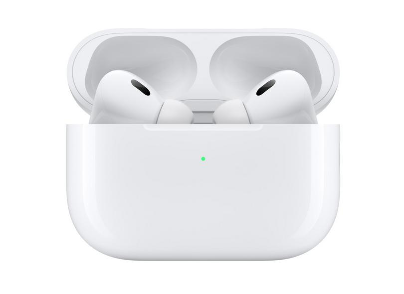

Airpods Pro:
Descrição:

Conheça todas as novidades dos AirPods. Áudio Espacial para você escutar o som por todos os lados(1), Equalização Adaptativa que ajusta a música aos seus ouvidos, bateria com maior duração(2) e resistência a suor e água. Prontos para levar você a uma experiência mágica(3).
Avisos legais
(1) O Áudio Espacial está disponível em filmes, programas de TV e vídeos nos apps compatíveis. Requer iPhone ou iPad.
(2) A duração da bateria varia de acordo com o uso e a configuração. Consulte apple.com/br/batteries para obter mais detalhes.
(3) Os AirPods (3ª geração) são resistentes a suor e água para exercícios e esportes que não sejam aquáticos. Os AirPods (3ª geração) foram testados em condições controladas em laboratório, classificados como IPX4 segundo a norma IEC 60529. A resistência a suor e água não é uma condição permanente e pode diminuir com o tempo. Não tente recarregar os AirPods (3ª geração) molhados. Veja instruções de limpeza e secagem em https://support.apple.com/kb/HT210711.
(4) A Siri não está disponível em todos os idiomas e regiões, e os recursos podem variar de acordo com a área.
(5) É preciso ter uma conta do iCloud e macOS 15.1, iOS 15.1, iPadOS, watchOS 8.1 ou tvOS 15.1 ou posterior.